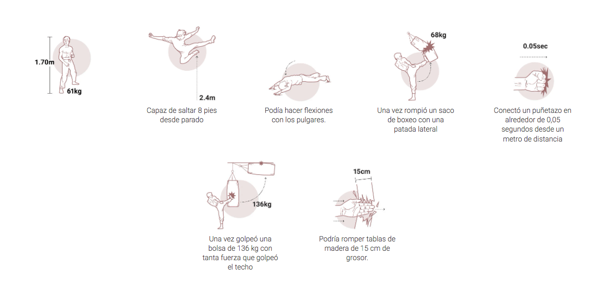
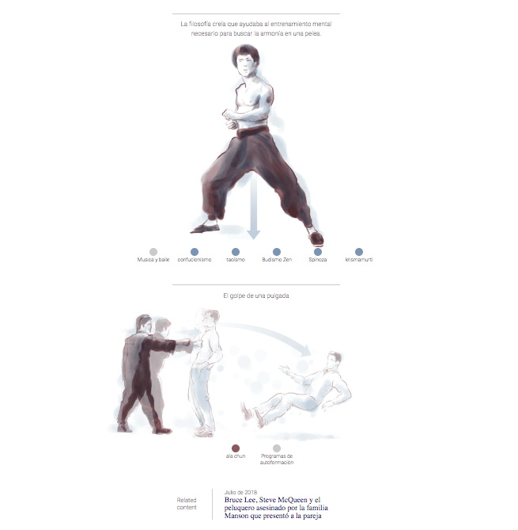
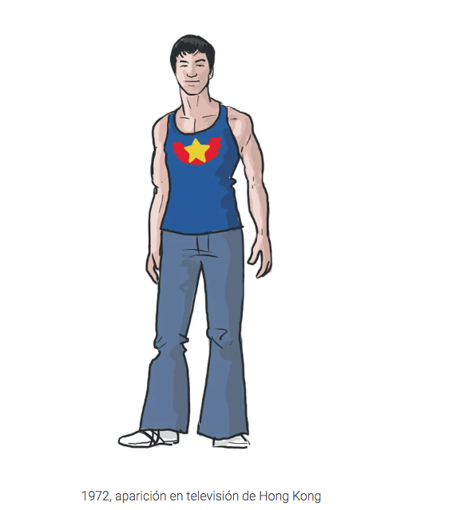
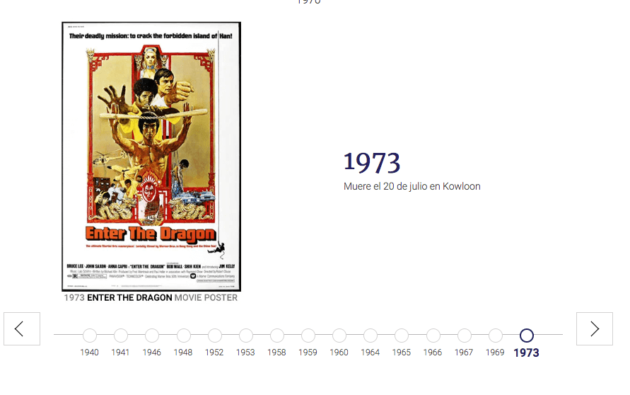
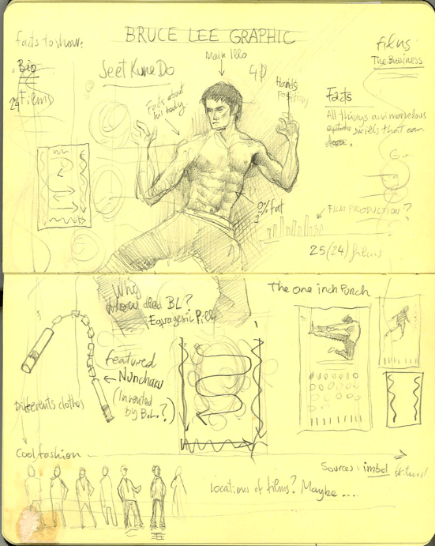

INFOGRAFÍA IMPRESA
La infografía en formato impreso, es una composición de gráficos figurativos, no figurativos y mixtos. Su contenido se puede fragmentar en 4 bloques con distinta información: una línea del tiempo de su aparición en películas,una sección principal en relación a sus habilidades donde predominan luego las artes marciales y la explicación del Jeet Kune Do. Por último se presenta una serie de gráficos figurativos en honor a sus distintos styling tanto dentro como fuera de las pantallas.
El primer gráfico presentado, corresponde a uno no-figurativo, compuesto por una línea de tiempo y un gráfico de áreas en un costado. Ambos permiten, a modo de introducción, dimensionar su trayectoria e importancia en la industria del cine.
El segundo gráfico de menor tamaño, que es uno figurativo, muestra características y destrezas físicas que tiene Lee y que lo hacen destacar. Estos se componen de una ilustración junto a texto complementario que busca dar información de impacto. Funciona cada una por sí sola al entregar un dato de interés sobre Bruce Lee, sin embargo el estilo visual propuesto permite leer estas imagenes de manera continua y fluida.
En mayor proporción se presenta información sobre el impacto de Lee en las artes marciales: donde se profundiza en el Jeet Kune Do como un híbrido de artes marciales y filosofías fundado por el mismo. Este gráfico que predomina, corresponde a uno mixto de gran tamaño donde se complementa con el uso de color y las ilustraciones. Estos se disponen en la hoja según la lógica de un diagrama aluvial y la caracterización por color para cada uno.
Por último, con un estilo gráfico más definido, colorido y ordenado, se presenta una sección final horizontal en el que se muestran los distintos styling de Bruce Lee. Esto se presenta a modo de gráficos figurativos por sí solos con una leyenda en el inferior.
INFOGRAFÍA DIGITAL
La infografía digital fue adaptada 5 años después de la infografía impresa. En esta versión se propone una nueva jerarquía de contenidos al comenzar por los gráficos figurativos en relación a sus capacidades y curiosidades en torno a las artes marciales. El formato scroll permite dar a conocer una a una, las principales combinaciones e influencias que Bruce incorporó al Jeet Kune Do.
La parte más extensa de la infografía corresponde a lo que anteriormente era el gráfico mixto de mayor tamaño pero que aquí se presenta a modo de gráficos figurativos acompañados de una leyenda descriptiva. Además, se simplifica su lectura en función del formato scroll, reduciéndolo a una única caracterización por color de cada una de las combinaciones: burdeo para Artes Marciales, azul para Filosofías y Espiritualidades y gris para Otros. Si bien todas las imagenes se mantienen como las originales, la última se muestra de manera interactiva para dar a conocer cómo es el golpe realmente.
No todo son golpes para este personaje, es en esta última sección en la que se aborda la faceta más cool y estilosa de Bruce Lee. Los 16 Bruce que aparecían uno al lado del otro en la infografía impresa, esta vez se muestran uno a uno de manera intermitente.
Complementario a estas representaciones de Lee y a modo de cierre, se incluye una versión interactiva de la línea del tiempo sobre sus apariciones en la televisión en el tiempo.
– BORRADORES, ANOTACIONES Y BOCETOS DEL AUTOR – A continuación, el autor del gráfico que se muestra arriba desea compartir algunas piezas que fueron parte de la producción de este gráfico
Pueden pasar los años, las ediciones, cambios de formato y nuevas tecnologías, pero la esencia de una idea que comenzó a lapiz y papel se mantiene y logra plasmar en esta interpretación.